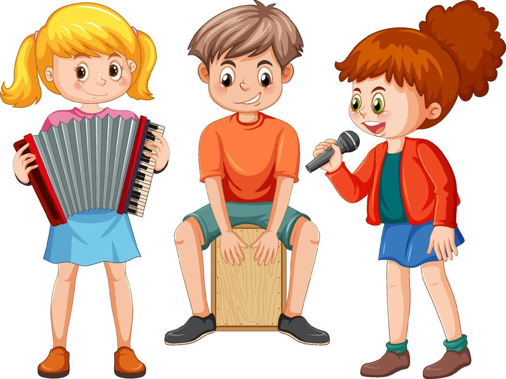
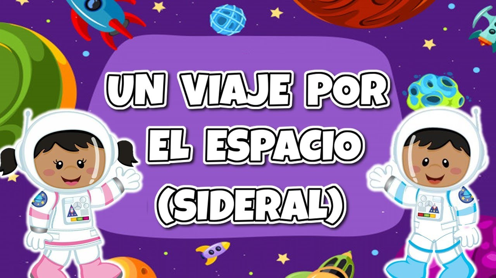
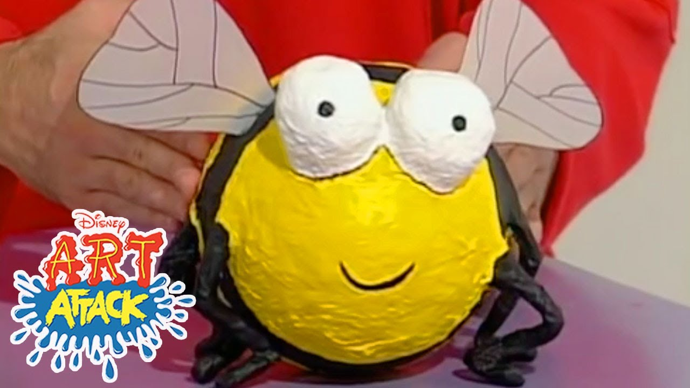
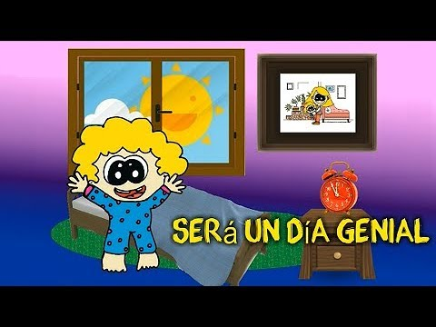

VIDEOS PARA NIÑOS DE 8 A 10 AÑOS
¡Explora nuestro catálogo de videos y canciones especialmente seleccionadas para niños de 8 a 10 años! Desde emocionantes aventuras científicas hasta creativas manualidades y contagiosas canciones motivacionales, ofrecemos contenido vibrante y educativo que nutre la curiosidad y la imaginación de los niños.
Sumérgete en un mundo de aprendizaje interactivo y diversión que inspirará a tus pequeños a través de melodías pegajosas y narrativas emocionantes. ¡Enciende la chispa de la creatividad y el conocimiento con nuestra selección única de videos para preadolescentes!

Video Educativo sobre Ciencia: "Viaje al Espacio"
Este video lleva a los niños en un emocionante viaje virtual al espacio. Explora conceptos básicos de astronomía, planetas y el sistema solar de manera educativa y visualmente atractiva.

Video Creativo de Manualidades: "Arte con Materiales Reciclados"
Este video fomenta la creatividad y la conciencia ambiental. Muestra cómo crear manualidades divertidas utilizando materiales reciclados, promoviendo la imaginación y la sostenibilidad.

Video Musical Motivacional: "Sé el Mejor"
Una canción motivacional con letras positivas y pegajosas que inspira a los niños a esforzarse y ser lo mejor que pueden ser. El video presenta animaciones coloridas y mensajes alentadores.
